Chimp trekking, hot springs, crater lakes and royal culture — all within a day trip of town. And when the day is done, a warm massage is waiting for you.
Book Your Massage on WhatsAppDistances are measured from Fort Portal town, your perfect base for exploring western Uganda.
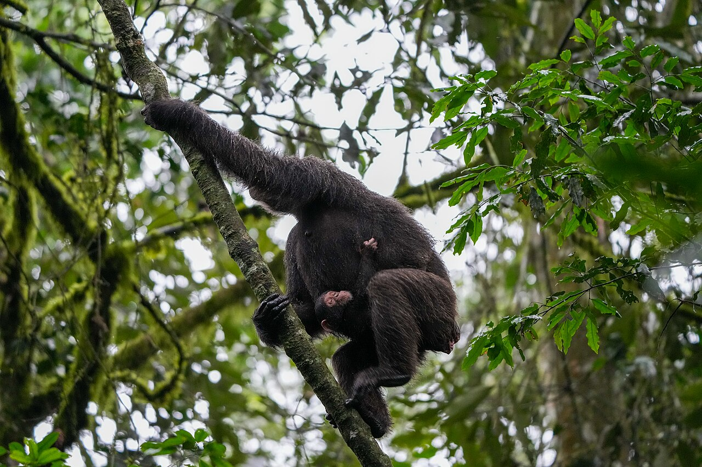
The chimp trekking capital of Africa, home to 13 primate species and over 375 birds. Treks run morning and afternoon.
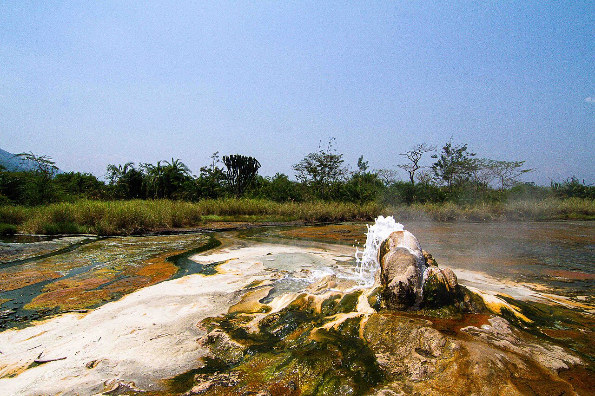
The male and female springs of Semuliki National Park. Water boils hot enough to cook eggs, deep in Congo-basin forest.
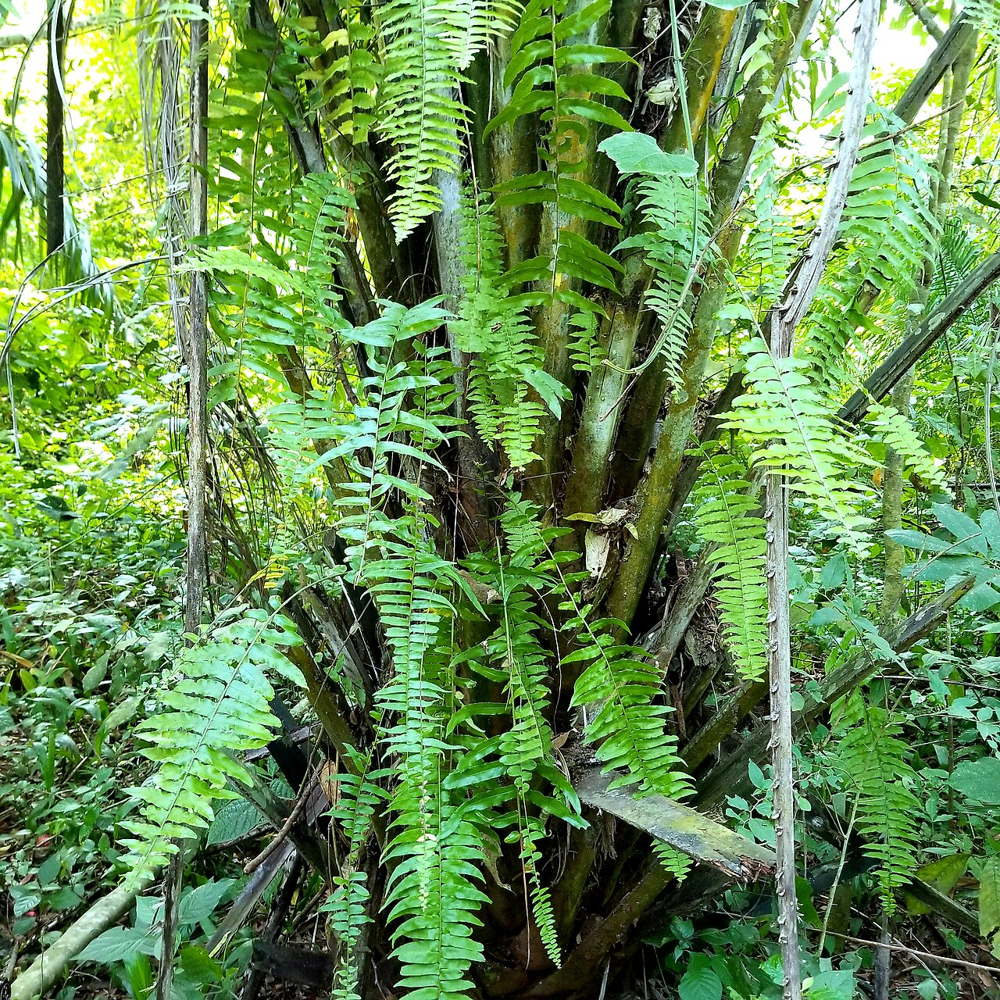
Game drives with elephants, buffalo and Uganda kobs, plus sweeping views over the Lake Albert escarpment.
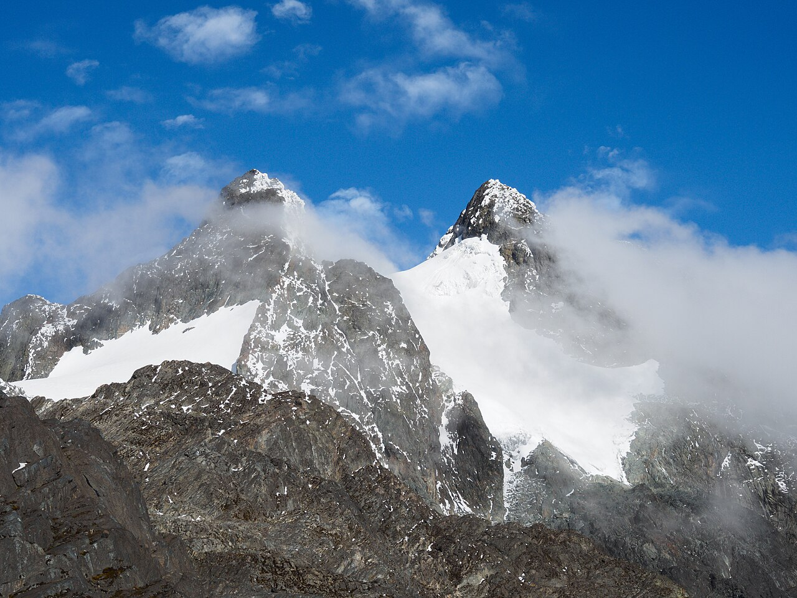
The legendary Mountains of the Moon. Day hikes to panoramic ridges or full treks to Margherita Peak, Africa's third highest.
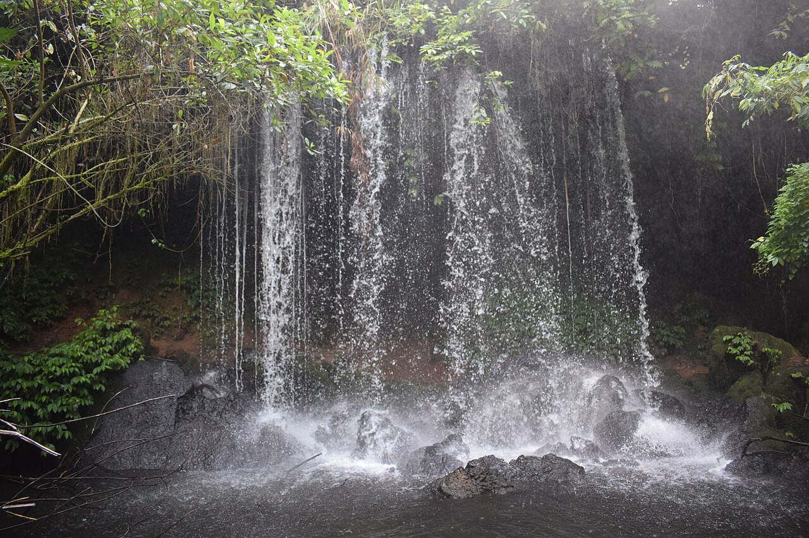
The famous Bachwezi legend caves at Nyakasura, with waterfalls, stalactites and three crater lakes on the walking trail.
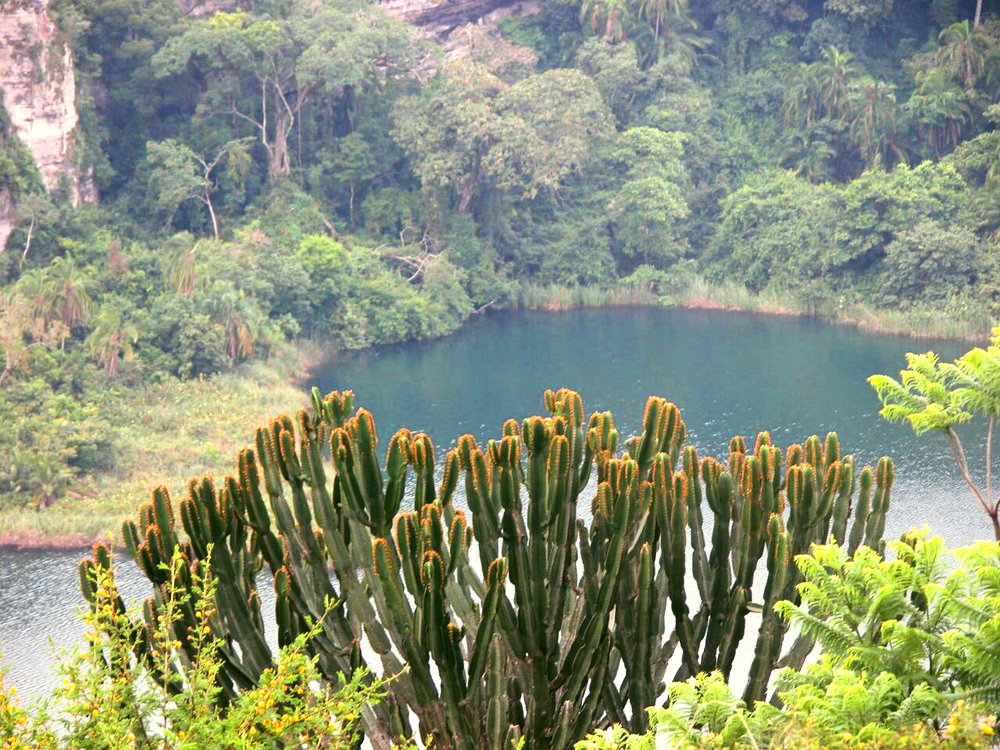
A deep blue crater lake perfect for a swim, a viewpoint walk or simply soaking in one of Tooro's most photographed views.
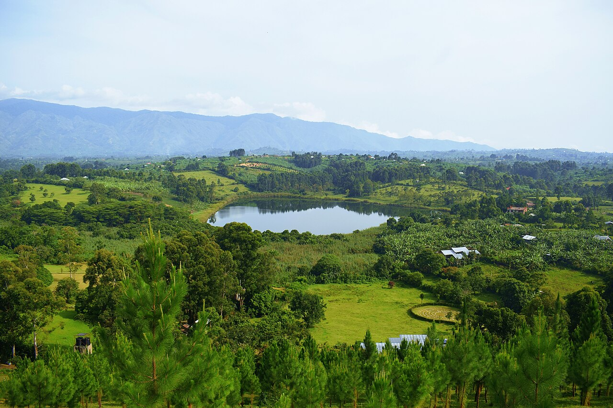
Dozens of crater lakes — Nkuruba, Nyabikere, Nyinambuga and more. Ride the "Top of the World" loop between town and Kibale.
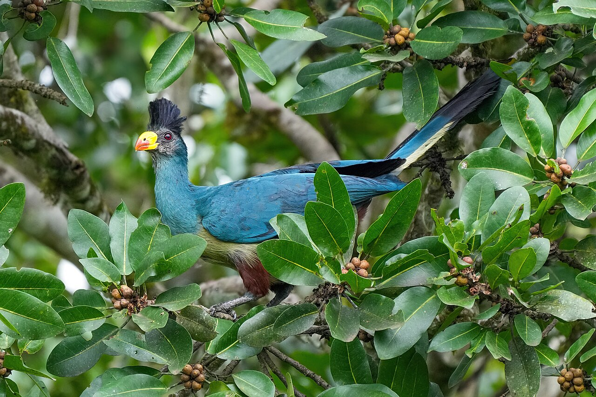
A community-run boardwalk famous for the Great Blue Turaco and over 200 bird species. One of Uganda's best birding spots.
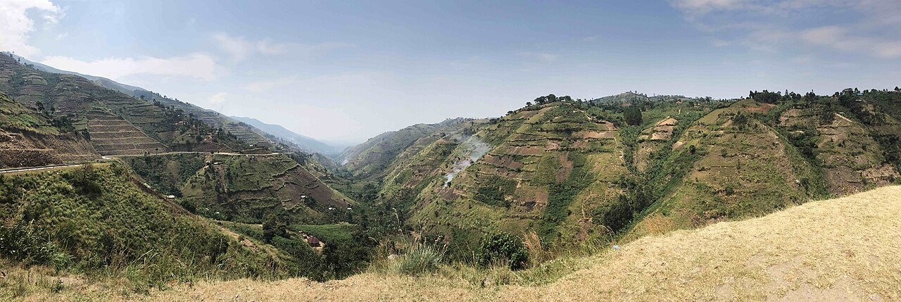
Stand on the escarpment edge and look across the Albertine Rift toward the Congo border, with fishing villages below at Ntoroko.
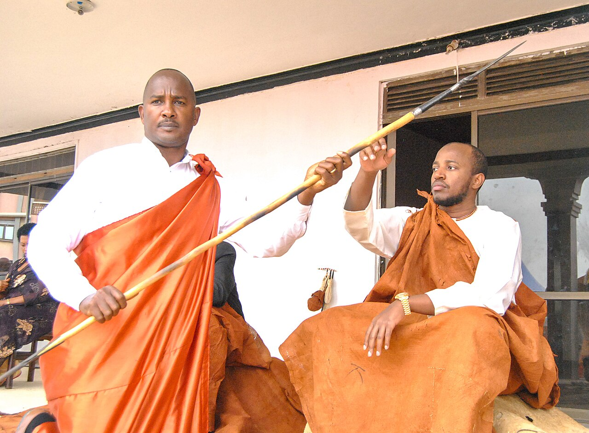
Home of King Oyo, one of the world's youngest monarchs, on Karuzika hill with sweeping views over Fort Portal town.
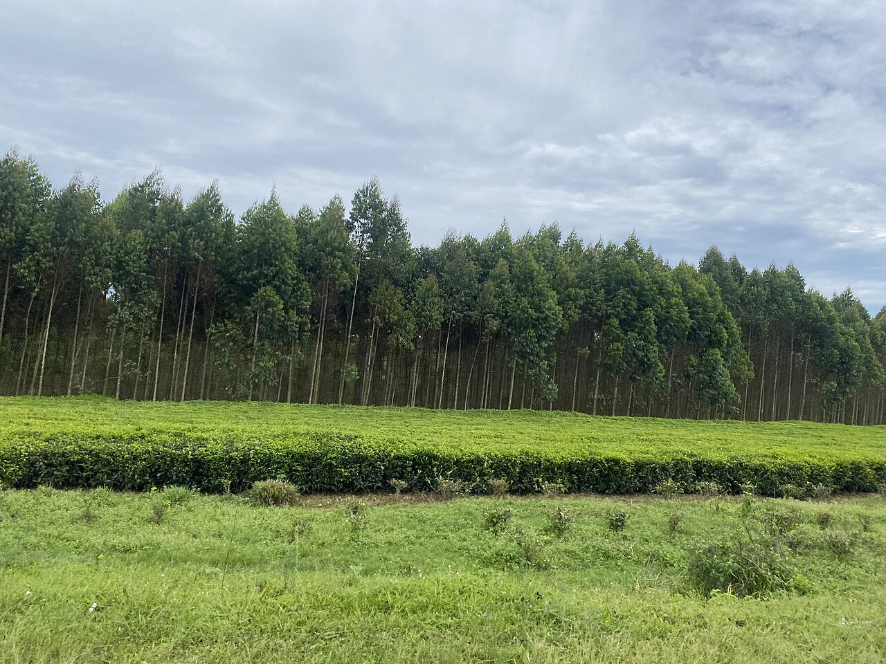
The hills around Fort Portal are carpeted in tea. Stop at the estates along the Kibale road to see pickers at work and learn the process.
Tired legs, dusty boots, aching shoulders? End your day the Posh way — massage, herbal steaming therapy, and a fresh medicinal juice.
Book on WhatsAppKiboga Road is minutes from town — walk in after your trek, or book ahead and we'll have the room ready.
Book on WhatsAppPhotos: Wikimedia Commons contributors — G. Laurent (Kibale chimp, turaco), and other free-license photographers. Used with credit under CC licenses.